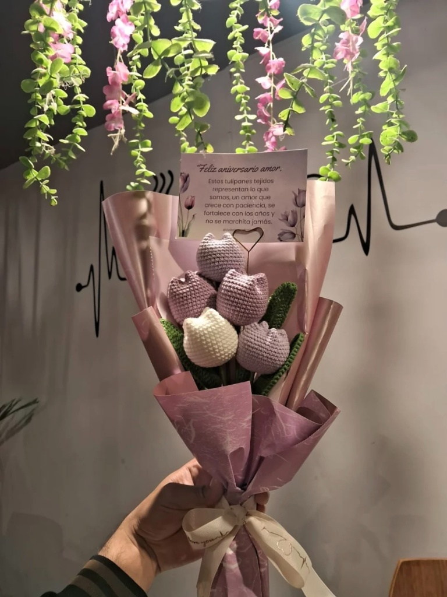

Hecho a mano en Ferreñafe
Ternura tejida hilo a hilo
Amigurumis y flores eternas creados a crochet, uno por uno, para convertirse en el regalo perfecto para las personas que más quieres.
100% crochet


